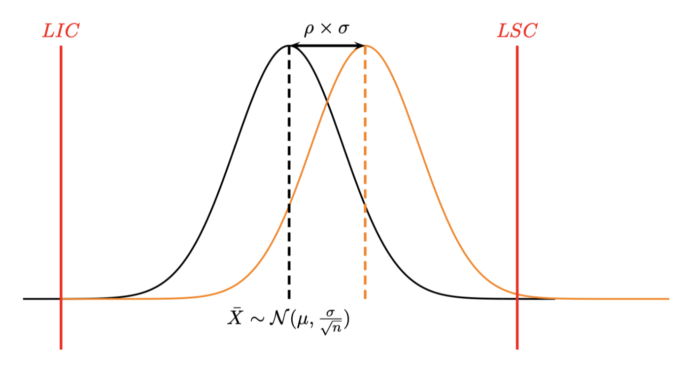
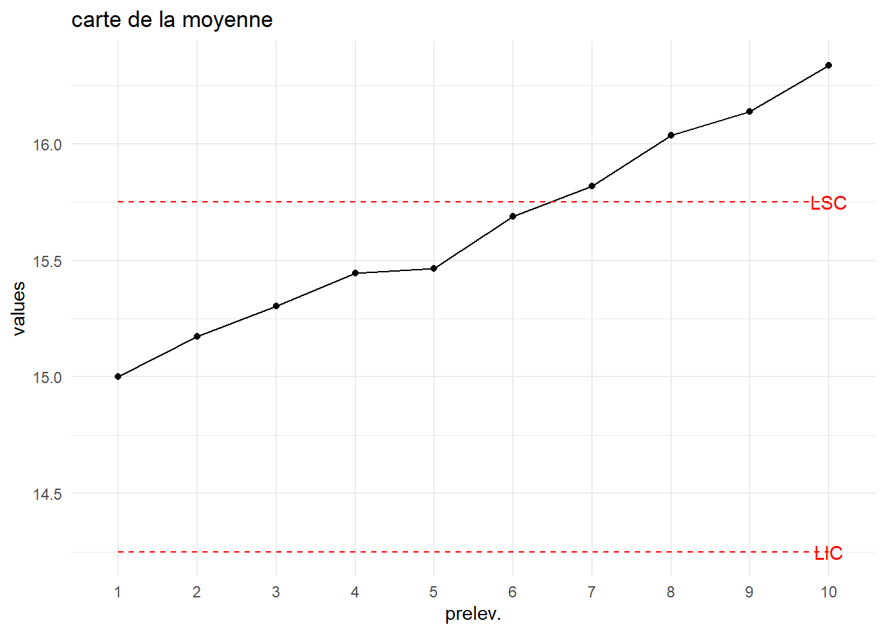
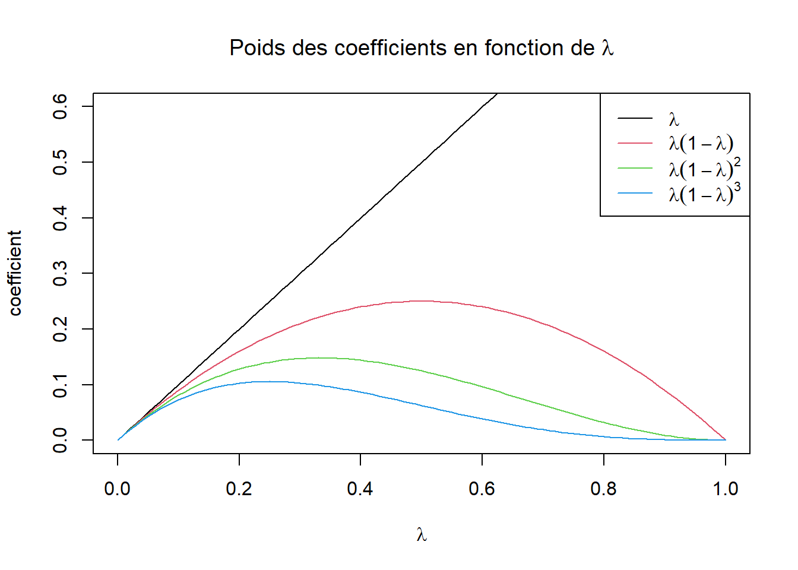

| X | weight.1 | weight.2 | weight.3 | weight.4 | weight.5 |
|---|---|---|---|---|---|
| 1 | 98.6 | 100.3 | 100.9 | 100.2 | 99.6 |
| 2 | 100.3 | 99.5 | 98.9 | 100.2 | 100.6 |
| 3 | 99.2 | 98.8 | 101.5 | 100.3 | 101.0 |
| 4 | 101.1 | 97.8 | 98.9 | 101.3 | 101.7 |
| 5 | 101.0 | 99.8 | 97.3 | 99.4 | 100.8 |
| 6 | 101.1 | 100.1 | 99.0 | 100.7 | 99.9 |
3 Cartes de contrôles de Shewhart
3.1 Principe
On va construire deux graphiques : une carte dite de position et une carte de dispersion.
Exemple
Suivi de production journalière de steacks hachés surgelés durant 12h de production. Chaque heure on prélève 5 steaks et on les pèse.
Les données sont disponibles ici
On va construire les cartes de contrôle données ci-dessous


Pour chaque échantillon de 5 steacks on calcule la moyenne et l’écart type et on les reporte sur les cartes correspondantes.
3.2 Distribution des paramètres
On suppose que tous les paramètres suivent une loi normale.
La moyenne d’un échantillon \(\bar Y \sim \mathcal N(\mu,\frac{\sigma}{\sqrt n}).\)
L’étendue d’un échantillon \(R \sim \mathcal N(\mu_R,\sigma_R).\)
L’écart type d’un échantillon \(S \sim \mathcal N(\mu_S,\sigma_S).\)
On définit alors les limites de surveillance et de contrôle pour chaque carte. Pour la carte de la moyenne :
 On se fixe un risque \(\alpha\) de stoper la production alors que celle-ci est sous contrôle (Fausses alertes). On cherche donc un intervalle de confiance \(1-\alpha\) de \(\bar X\) La distribution des moyennes étant normale on a
On se fixe un risque \(\alpha\) de stoper la production alors que celle-ci est sous contrôle (Fausses alertes). On cherche donc un intervalle de confiance \(1-\alpha\) de \(\bar X\) La distribution des moyennes étant normale on a
\[ \begin{cases} LI=\mu-z_{1-\alpha/2}\frac{\sigma}{\sqrt n} \\ LS=\mu+z_{1-\alpha/2}\frac{\sigma}{\sqrt n} \\ \mathbb P(LI<\bar X<LS)=1-\alpha \end{cases} \]
On pourra en conclure que la moyenne \(\bar X\) de l’échantillon considéré n’est pas significativement différente de la moyenne \(\mu\) (c’est à dire que le procédé est sous contrôle) si \(\bar X \in [LI,LS].\)
Les limites de surveillance sont définies de façon à déterminer, au risque de 4.5%, les moyennes significativement différentes de la moyenne globale :
Limite inférieure de surveillance (LIS): \(LIS=\mu-2\frac{\sigma}{\sqrt n}\)
Limite supérieure de surveillance (LSS): \(LSS=\mu+2\frac{\sigma}{\sqrt n}\)
Les limites de contrôle sont définies de façon à déterminer, au risque de 0.3% de fausses alertes, les moyennes significativement différentes de la moyenne globale :
Limite inférieure de contrôle (LIC): \(LIC=\mu-3\frac{\sigma}{\sqrt n}\)
Limite supérieure de contrôle (LSC): \(LSC=\mu+3\frac{\sigma}{\sqrt n}\)
Limites des cartes de contrôle
On a prélevé à intervalles réguliers \(k\) échantillons de \(n\) observations. On a calculé \(\bar y_j,R_j\) la moyenne et l’étendue de chacun des \(k\) échantillons.
Pour construire :
La carte de la moyenne on utilise \(\hat \mu_I=\frac 1{k} \displaystyle\sum_{j=1}^k \bar y_{j}\) et \(\hat \sigma_I = \dfrac{\bar R}{d_2}\).
La carte de l’étendue on utilise \(\hat\mu_R=\bar R\) et \(\hat \sigma_R=\frac{d_3}{d_2}\bar R\).
La carte de l’écart type on utilise \(\hat\mu_S=\bar S\) et \(\hat \sigma_S=\frac{\sqrt{1-c_4^2}}{c_4}\bar S\).
3.3 Retour sur l’exemple :
Calculer les limites de contrôles des cartes de la moyenne et de l’écart type.
Construire les cartes s’obtiennent en utilisant la fonction plot_chart() du package multiSPC.
Voir la correction
df<-data[,-1]
n=ncol(df)
M=apply(df,1,mean)
S=apply(df,1,sd)
mu=mean(M)
sigI=mean(S)/c4(n)
LICm=mu-3*sigI/sqrt(n)
LSCm=mu+3*sigI/sqrt(n)
LICs=mean(S)-3*mean(S)*sqrt(1-c4(n)^2)/c4(n)
LSCs=mean(S)+3*mean(S)*sqrt(1-c4(n)^2)/c4(n)
plot_chart(M,LIC=LICm,LSC=LSCm,Type = "carte de la moyenne")
plot_chart(S,LIC=LICs,LSC=LSCs,Type = "carte de l'écart type")3.4 Efficacité des cartes de Shewhart
La notion d’efficacité d’une carte de contrôle est sa capacité à détecter un dérèglement alors que la production semble rester sous contrôle.
Le dérèglement peut concerner un décentrage (dérèglement de la moyenne) ou bien une augmentation de la dispersion.
La notion d’efficacité est proche de la notion de puissance pour les tests statistiques.
3.4.1 Faux positifs et Faux négatifs
On va traduire dans le contexte de la MSP les notions vues sur les tests.
Réalité (jamais connue) : dérive (ou non) de la production
Résultat du contrôle : détection (ou non) d’une dérive de production.
Ceci conduit à deux types d’erreurs
| Réalité | |||
|---|---|---|---|
| Déréglage | Non déréglage | ||
| carte de CTRL | Détection | VRAI POSITIF | FAUX POSITIF |
| Non détection | FAUX NEGATIF | VRAI NEGATIF | |
Ce que l’on connait (par construction de la carte de contrôle) :
La probabilité d’obtenir un faux positif : 0.3 % (par définition des limites de contrôle)
La probabilité d’obtenir un vrai négatif : 99.7% (toujours par construction).
Ce que l’on cherche :
La probabilité \(\beta\) d’obtenir un faux négatif ou de manière équivalente la probabilité \(1-\beta\) d’obtenir un vrai positif (appelée puissance du test).
3.4.2 Déréglage de la moyenne
 Un décentrage de moyenne est exprimé en nombre d’écart type (unité standardisé) donc si \(\mu_1\) est la moyenne décentrée, on lui associera le décentrage
\[ \rho=\frac{|\mu_1-\mu|}{\sigma} \]
La probabilité \(\beta\) de ne pas détecter le décentrage est alors
\[ \beta=\mathbb P(LIC<\widetilde X <LSC) \]
où \(\widetilde X \sim \mathcal N(\mu+\rho\sigma,\frac{\sigma}{\sqrt{n}}).\) Un calcul simple permet d’obtenir
\[ \beta = F(3-\rho\sqrt n)-F(-3-\rho\sqrt n) \]
où \(F(x)=\mathbb P(X<x)\) est la fonction de répartition de la loi normale.
L’efficacité de la carte est mesurée par \(1-\beta\) ( puissance de la carte).
On obtient ainsi les courbes d’efficacité de la carte de la moyenne en fonction de la taille \(n\) des échantillons prélevés.

On constate (ce qui est logique) que la probabilité de ne pas détecter un déréglage donné diminue en fonction de la taille de l’échantillon.
Détecter un déréglage \(\rho=0\) correspond à une fausse alerte qui vaut pour la carte de la moyenne \(\alpha=0.3\%\).
3.4.3 Déréglage de l’écart type
Ici on considère des décentrages \(\rho>1\) (sinon il s’agit d’une amélioration de la dispersion).
Un calcul similaire au précédent conduit à \[ \beta=F(\frac{3}{\rho})-F(\frac{-3}{\rho}) \] Ici on constate que l’efficacité de la carte est indépendante de \(n\) et qu’elle est très mauvaise. Il faut une très grande valeur de \(\rho\) pour avoir une petite valeur de \(\beta\).
Par exemple pour \(\rho=3\) on a \(\beta=\) 0.6826895 c’est à dire pour un écart type qui triplerait la probabilité ne peut pas détecter ce dérèglement est de 68.3%.
3.4.4 Période opérationelle moyenne (Average Run Length)
La Période Opérationnelle Moyenne correspond au nombre de prélèvements qu’il faut effectuer, en moyenne, pour sortir des limites de contrôle lorsque qu’un déréglage \(\rho\) s’est produit.
Le cas \(\rho=0\) pour une carte de Shewhart avec des observations indépendantes correspond à une fausse alerte qui se produit dans \(\alpha=0.3\%\) et correspond à
\[ ARL_0=\frac{1}{0.003}=333 \] donc il faut en moyenne 334 prélèvements avant de détecter une fausse alerte.
\(ARL\) est définie par
\[ ARL_\rho=\frac 1{1-\beta} \]
C’est donc l’inverse de la puissance (efficacité) de la carte, donc plus ce nombre sera petit plus la carte sera efficace.
Si on reprend les courbes d’efficacité précédente on obtient :

3.4.5 Calibration des tailles de prélèvement
La production initiale est \(X\sim \mathcal N (\mu,\sigma)\) et la production décentrée vaut \(\widetilde X \sim \mathcal N (\mu+\rho\sigma,\sigma)\). On sait calculer la probabilité \(1-\beta\) de détecter le décentrage en fonction de \(\rho\) et on a donc
\[ ARL_\rho=\frac 1{1-\beta}=\frac 1{1-F(3-\rho\sqrt n)+F(-3-\rho\sqrt n)} \]
Exemple :
Considérons le problème suivant : on a un décentrage de moyenne de 0.5 écart type. On voudrait le détecter en moyenne avant 50 prélèvements. Quelle taille d’échantillon doit-on considérer ?
n<-seq(2,20,by=1)
rho<-.5
beta=pnorm(3-rho*sqrt(n))-pnorm(-3-rho*sqrt(n))
ARL<-1/(1-beta)
J<-which.max(ARL<50)
n[J][1] 4